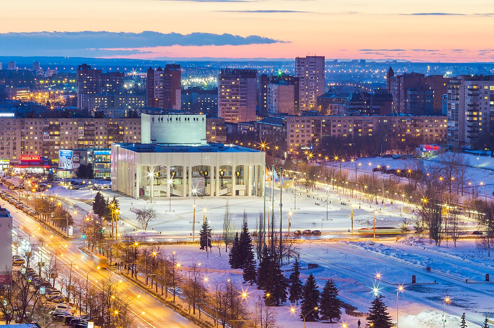
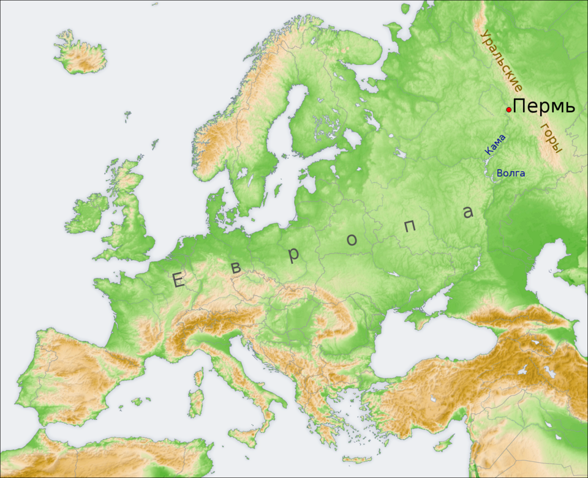

Пермь — город на востоке европейской части России, в Предуралье, на берегах реки Камы, ниже впадения в неё реки Чусовой, административный центр Пермского края и Пермского района, транспортный узел на Транссибирской магистрали, речной порт, имеет статус города краевого значения и городского округа[11].

Город Пермь расположен на востоке европейской части России, на берегах реки Камы, к югу от устья реки Чусовой. Протяжённость Камы в пределах городской черты Перми[22] составляет около 60 км (от устья реки Ласьвы до устьев ручьёв Азово и Глушата — правых притоков Камы)[23]. Благодаря Каме Пермь связана водными путями с пятью европейскими морями: Каспийским, Белым, Чёрным, Азовским и Балтийским.
